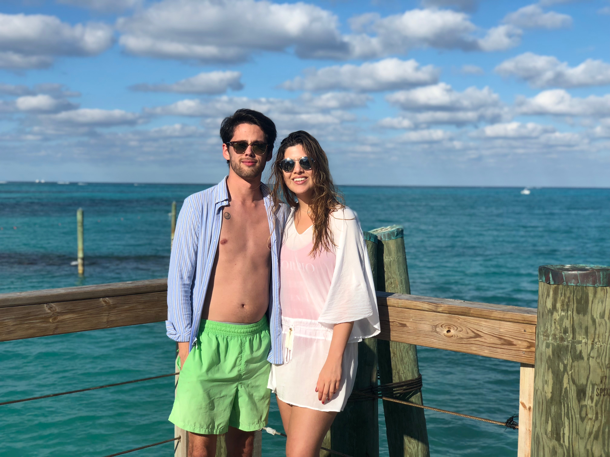

Relevent Courses
- Advanced Design for Public Relations
- Communication Law and Policy
- Consumer Behavior
- Digital and Social Media Analytics
- Economic Principles and Problems
- Fashion Journalism
- Industrial And Organizational Psychology
- International Marketing
- Organizational Behavior
- Public Relations Campaigns
- Public Relations Message Development And Execution
- Public Relations Research
- Public Relations Strategy Development
- Public Speaking
- Retailing
- Social Media Messaging And Strategies
- Web design
- Writing for Public Relations